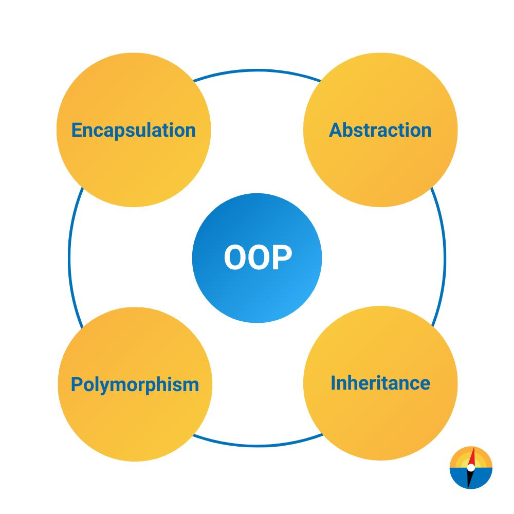

What is Object-oriented Programming?
🔰Trong bài viết đầu tiên, chúng ta đi đến khái niệm về OOP.
OOP (viết tắt của Object Oriented Programming) – lập trình hướng đối tượng, là một phương pháp lập trình dựa trên khái niệm về lớp và đối tượng.
OOP tập trung vào các đối tượng thao tác hơn là logic để thao tác chúng, giúp code dễ quản lý, tái sử dụng được và dễ bảo trì.
🧑💻Bất kỳ developer nào muốn đi trên con đường lập trình cũng đều phải biết về OOP. Vậy:
OOP là gì? Đối tượng và lớp trong OOP là gì?
Các đặc tính cơ bản của OOP?
Các ngôn ngữ OOP phổ biến và tài liệu tham khảo
Lập trình hướng đối tượng (OOP) là gì? OOP được dùng để làm gì?
============================
OOP (viết tắt của Object Oriented Programming) – lập trình hướng đối tượng là một phương pháp lập trình dựa trên khái niệm về lớp và đối tượng. OOP tập trung vào các đối tượng thao tác hơn là logic để thao tác chúng.
OOP là nền tảng của các design pattern hiện nay.
Mục tiêu của OOP là tối ưu việc quản lý source code, giúp tăng khả năng tái sử dụng và quan trọng hơn hết là giúp tóm gọn các thủ tục đã biết trước tính chất thông qua việc sử dụng các đối tượng.
Đối tượng (Object) và Lớp (Class) trong OOP là gì?
📍Đối tượng (Object):
Đối tượng trong OOP bao gồm 2 thành phần chính:
1. Thuộc tính (Attribute): là những thông tin, đặc điểm của đối tượng
2. Phương thức (Method): là những hành vi mà đối tượng có thể thực hiện
Để dễ hình dung, ta có một ví dụ thực tế về đối tượng là smartphone. Đối tượng này sẽ có:
Thuộc tính: màu sắc, bộ nhớ, hệ điều hành…
Phương thức: gọi điện, chụp ảnh, nhắn tin, ghi âm…
📍Lớp (Class)
Lớp là sự trừu tượng hóa của đối tượng.
Những đối tượng có những đặc tính tương tự nhau sẽ được tập hợp thành một lớp. Lớp cũng sẽ bao gồm 2 thông tin là thuộc tính và phương thức.
==> Một đối tượng sẽ được xem là một thực thể của lớp.
Tiếp nối ví dụ ở phần đối tượng (object) phía trên, ta có lớp (class) smartphone gồm 2 thành phần:
1. Thuộc tính: màu sắc, bộ nhớ, hệ điều hành…
2. Phương thức: gọi điện, chụp ảnh, nhắn tin, ghi âm…
Các đối tượng của lớp này có thể là: iPhone, Samsung, Oppo, Huawei…
📍Ưu điểm của lập trình hướng đối tượng OOP
- OOP mô hình hóa những thứ phức tạp dưới dạng cấu trúc đơn giản.
- Code OOP có thể sử dụng lại, giúp tiết kiệm tài nguyên.
- Giúp sửa lỗi dễ dàng hơn. So với việc tìm lỗi ở nhiều vị trí trong code thì tìm lỗi trong các lớp (được cấu trúc từ trước) đơn giản và ít mất thời gian hơn.
- Có tính bảo mật cao, bảo vệ thông tin thông qua đóng gói.
- Dễ mở rộng dự án.